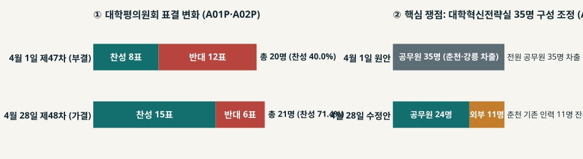
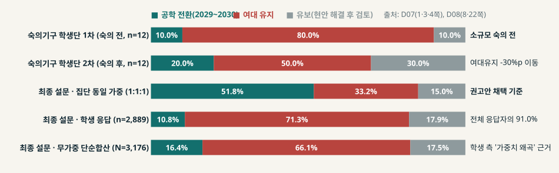
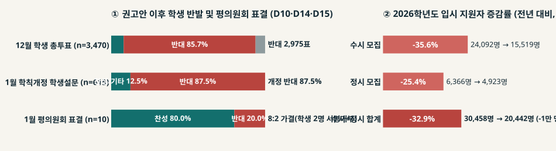
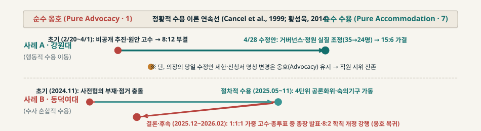

변화의 결단은 왜 위기가 되는가:
공식 결정의 진전과 내부 공중 수용의 괴리
강원대–강릉원주대 통합과 동덕여대 공학 전환 사례의 정황적 수용 이론(Contingency Theory) 및 갈등관리 생애주기 비교 분석
사례 A강원대–강릉원주대 통합
외적 위협과 부분적 행동 수용: 글로컬 사업비 2,150억 원·50% 삭감 경고 속 2/20 선제출이 4/1 부결(8:12)을 불렀으나, 혁신전략실 정원 조정(공무원 35→24명) 등 실질 수정으로 4/28 가결(15:6) 및 통합 출범 A01PA02PA04
구조개혁 압박 속 대학 거버넌스 위기: 두 사례의 대조적 경로
학령인구 감소와 재정 압박 속에서 대학 본부의 구조개편 결단은 생존 전략이지만, 내부 공중(교원·직원·학생)에게는 직무·캠퍼스 위상·정체성을 흔드는 위기로 작동한다 R1R2.
| 비교 차원 | 사례 A · 강원대–강릉원주대 통합 (국립대) | 사례 B · 동덕여대 공학 전환 (사립 여대) |
|---|---|---|
| 추진 배경 및 의제 | 글로컬대학30 ‘1도 1국립대’ 통합 (5년간 국비·지방비 2,150억 원 및 정보화 통합예산 450억 원 연계) A02PA04 | 학령인구 감소 대응 대학비전혁신추진단 ‘VISION 2040’ 및 단과대·대학 남녀공학 전환 추진 D06D26 |
| 초기 위기 촉발 | 선(先) 제출·후(後) 심의 논란: 2025.02.20 교육부 신청서 제출 후 02.28 평의원회 당일 257쪽 배부 → 04.01 8:12 부결 A03PA01P | 전조 단계 소문 유출·점거: 2024.11.05 추진단 동의 후 11.07 학내 소문 확산·11.11 처장단 면담 취소 통지 → 본관 점거 D01D26 |
| 핵심 갈등 쟁점 | 통합 거버넌스(대학혁신전략실 35명 차출), 춘천·삼척 위상 및 직원 인사·근무지 이동(조정 가능한 실리·배분 쟁점) A01PA07 | 115년 여성교육 창학정신과 여대 정체성 유지 vs. 공학 전환, 공론화 1:1:1 가중치 규칙(타협 어려운 정체성·절차 쟁점) D03D11 |
| 공식 결정과 사후 수용 | 4/28 수정안 15:6 가결 → 5월 교육부 승인·연차평가 A등급·2026.03 출범(단, 가결 당일 직원 시위 등 불신 잔존) A02PA08A17 | 12/2 권고·2026.01 평의원회 8:2 가결·02.26 학칙 공포 vs. 총투표 85.7% 반대·학생위원 서명 거부·지원자 -32.9% D10D14D15 |
정황적 수용 이론: 사전성향·상황 변인과 수용의 두 양태
조직의 입장은 고정된 규범이 아니라 순수 옹호(Pure Advocacy, 1)와 순수 수용(Pure Accommodation, 7) 사이의 연속선 위에서 내·외적 변인에 따라 역동적으로 이동한다 P99H14.
① 사전성향적 변인 (Predisposing)
위기 이전 초기 입장(Baseline)을 설정하는 내적 조건 P99H14:
- 법정 거버넌스 구조: 국립대 통합심의(평의원회 의결 필수) vs. 사립대 법인·교무위·평의원회 구조
- 조직 문화와 PR 자율성: 협상 보안·위계 중심 의사결정 문화 vs. 개방적 소통 문화 M04
- 최고의사결정자의 인식: 구조개혁 시급성에 대한 총장·집행부의 확신 수준
② 상황적 변인 (Situational)
위기 국면에서 입장을 이동시키는 외적·국면적 압력 P99P01:
- 외적 위협과 잠재적 비용: 정부 사업비 삭감 경고·승인 마감 시한(강원대 2,150억·5월 입시 마감)
- 공중의 상대적 권력: 법정 부결권을 쥔 단일 관문(평의원회) vs. 집단행동·여론전에 의존하는 학생 공중
- 수용 제한 요인(Cameron et al., 2001): 상충하는 복수 공중(Multiple Publics)과 정체성·도덕적 비타협성 P01
③ 수용의 질적 분화 (Jin & Cameron)
황성욱(2014)이 강조한 수용 양태의 핵심 구분 H14:
- 행동적 수용(Action-based): 조직이 공중의 요구를 반영해 실제 정책·인력·자원을 수정하는 실질적 양보
- 수사 혼합적 수용(Qualified-rhetoric-mixed): 대화 테이블 개설·공감 표명 등 절차적·언어적 양보를 취하되 핵심 결론은 고수
- 입장(Stance) ≠ 결과(Outcome): 한 쟁점의 수용이 전체 갈등의 완전 종결을 보장하지 않음
갈등관리 생애주기 4단계와 위기관리 3대 평가 축
갈등관리 생애주기와 수업 이론의 결합 W05H11
- 1단계 · 사전대응적(Proactive): Heath(1997)의 환경 스캐닝·지형 정찰(scouting the terrain)로 구성원의 직무·정체성 위협을 조기 감지 H97
- 2단계 · 전략적(Strategic): Sturges(1994)의 전조 단계 관리 — 공중의 의견 고착화(opinion solidification) 이전에 정확한 정보와 선택지를 공유 S94
- 3단계 · 반응적(Reactive): 위기 폭발 시 Marra(2004)의 소통 문화·PR 자율성에 기반해 행동적 수용과 의결 규칙 합의를 수행 M04
- 4단계 · 회복(Recovery): 결정 이후 상시 분쟁조정·내부 정보 공유로 신뢰와 외부 평판을 복원 H11H22
강원대: 2,150억 사업비 압박 속 ‘선제출·후통보’와 8:12 부결
초기 추진 경과와 절차적 불신의 형성 (2024.07 ~ 2025.03)
- 사전성향 및 외적 압박: 2024.07.24 글로컬대학위원회가 통합 지연 시 글로컬 자금 50% 삭감을 경고하자, 본부는 대외 협상 보안을 이유로 세부 정원·조직안을 비공개로 추진 A03P.
- 선(先) 제출 논란: 2025.02.16 양교 총장 합의 후 평의원회 심의 전인 02.20 교육부에 신청서를 먼저 제출했고, 02.28 제46차 회의 직전에야 257쪽 전문을 송부해 심의가 보류됨 A16A03P.
- 캠퍼스·직역 반발 확산: 03.18 삼척 지역사회·동창회·교수회 항의로 평의원회가 무산되었고, 03.31 추가 공청회에서도 행정직원의 강릉 차출(대학혁신전략실 35명) 우려가 집중 제기됨 A01PA07.
4월 1일 제47차 회의: 왜 ‘조건부 가결’ 제안도 부결되었는가?
- 본부의 1차 대응(문서화 없는 구두 약속): 본부는 40여 쪽 ‘의견수렴 요약표(수정불가/수정가능/현행유지)’를 제시하고, 평의원회 추천 실무단 구성 및 교육부 중대 수정 시 재심의를 전제로 조건부 가결을 요청함 A01P.
- 내부 공중의 거부 논리: ① 신청서 본문에는 여전히 공무원 35명 차출 원안이 그대로 남아 있었고, ② “수정안이 성안된 뒤 심의하는 것이 순서”라는 교원·직원·학생 위원들의 비판이 수렴되며 찬성 8표, 반대 12표(기권 0, 총 20명)로 부결됨 A01PA12.
- 이론적 해석(Sturges, 1994): 2/20 선제출로 ‘절차 패싱’ 인식이 고착화된 상태에서는 본문 수정 없는 수사적 약속만으로는 태도 변화를 유도할 수 없었음 S94.
강원대: 핵심 쟁점의 행동적 수용(35→24명)과 15:6 가결

무엇을 실질적으로 수정했는가? (행동적 수용 · Action-based)
강원대 분석: 법정 의결권과 외적 시한이 추동한 ‘부분적 행동 수용’
정황적 수용 이론 변인 작동 메커니즘 P99H14
- 외적 위협과 긴급성(Threat & Urgency): 글로컬 사업비 2,150억 원(50% 삭감 경고)과 정보화 예산 450억 원 상실 위험, 그리고 5월 말 대교협 2026학년도 통합 입시전형 제출 기한이 본부의 입장 이동과 의장의 절차 단축을 동시에 압박함 A02PA06.
- 공중의 상대적 권력(Public’s Power): 대학평의원회가 통합신청서 심의라는 법정 필수 관문(Veto Point)을 보유했기에, 4/1 부결 직후 본부는 원안 고수(옹호)를 멈추고 실질 수정안을 성안할 수밖에 없었음 A01P.
- 요구의 조정 가능성: 핵심 반발 지점이 정원 배분(35명→24+11명)과 조직 설계라는 가분적·협상 가능(divisible) 쟁점이었기에 타협안 도출이 가능했음.
승인 이후의 경과: 제도적 출범과 회복 단계 과제 (2025.05 ~ 2026.03)
- 통합 승인 및 연차평가 A등급: 2025.05.29 교육부 통폐합 최종 승인 후, 06월 교육부 글로컬 연차평가에서 유일하게 A등급을 획득함 A08A10.
- 후속 거버넌스 가동: 19개 통합세부분과위원회 및 캠퍼스위원회·분쟁조정위원회를 설계하고, 탑클래스·글로컬 통합학과(유형별 학사 재구조화)와 2026.01 통합 학칙 전부개정안을 거쳐 2026.03 4개 캠퍼스 통합 입학식을 개최함 A06A09A17.
- 남은 갈등: 행정직원의 인사 이동 불안과 단과대 학사 재구조화 세부 기준을 둘러싼 회복 단계(Recovery) 소통 과제가 지속됨 A07A09.
| 평가 축 | 판정 | 실증 근거 요약 |
|---|---|---|
| ① 공식 결정의 진전 | 달성 (가결·출범) | 4/1 부결(8:12) 위기를 넘어 4/28 가결(15:6), 5/29 교육부 승인, 2026.03 통합 강원대 공식 출범 완료 A02PA10A17 |
| ② 핵심 요구 실질 반영 | 부분적 행동 수용 | 혁신전략실 공무원 35→24명 축소·외부 11명 충원(춘천 11명 잔류)·IR혁신과 신설 반영 vs. 당일 수정동의 제한 A02PA04 |
| ③ 내부 수용·외부 평판 | 제도 수렴 / 직역 온도차 | 평의원회 다수 수용 및 글로컬 연차평가 A등급 달성 vs. 가결 당일 직원협의회 시위 및 명칭 변경 불신 잔존 A07A08A15 |
동덕여대: 전조 단계 ‘의견 고착화’와 절차적 수용으로의 전환
Sturges(1994)가 지적하듯, 공식 설명 이전에 비공식 소문으로 의제가 노출되면 공중의 의견이 ‘밀실 추진’ 규범으로 즉각 고착화되어 사후 해명이 작동하지 않는다 S94D26.
동덕여대 공론화의 역설: 숙의기구는 움직였으나 1:1:1 설문이 충돌했다

발견 ①: 소규모 숙의기구(48명)에서는 실제 태도 이동이 발생함
발견 ②: 대규모 설문(N=3,176)의 가중치 충돌과 4차 회의 규칙
동덕여대 후속 국면: 학칙 개정은 관철됐으나 수용 위기가 재점화되다

① 12/3 조기 발표와 총투표 충돌
② 1/12 평의원회 8:2와 비밀유지 공문
동덕여대 분석: 복수 공중의 비타협적 충돌과 ‘수사 혼합적 수용’
정황적 수용 이론 및 수용 제한 요인 분석 P01H14
- 상충하는 복수 공중(Multiple Publics): Cameron et al.(2001)이 규명한 대표적 수용 제한 요인. 교원(공학 찬성 76.0%)·직원(68.5%)·동문은 대학 경쟁력을 이유로 전환을 요구한 반면, 학생(여대 유지 71.3%)은 정체성 보전을 요구해 한 집단에 대한 수용이 다른 집단에 대한 배제가 되는 딜레마가 발생함 P01D07.
- 비타협적 정체성 쟁점: ‘여대 유지 vs 공학 전환’은 정원 숫자처럼 쪼갤 수 없는 이분법적 정체성 사안이었음.
- 법정 거부권의 비대칭: 평의원회(10명 중 학생 2명)와 공론화위(12명 중 학생 3명) 모두 학생 단위가 단독 부결권을 갖지 못하는 구조였음 D08D14.
학교 측 방어 논리 vs. 학생 측 수용 거부 논리 D09D11
- 학교 본부의 반론(D09·D11): ① 고등교육법상 대학평의원회도 특정 단위가 과반을 넘지 못하게 규정(통상 4:2:2)하므로 1:1:1 가중은 법 취지에 부합하며, ② 재학생 반대를 고려해 권고안보다 구체적인 ‘현 재학생 졸업 시점(2029년)’으로 이행을 유예한 것이 실질적 배려라는 입장 D09D11.
- 학생 측의 반발(D08·D10): ① 소규모 숙의기구(1:1:1:1)와 달리 일반 모집단 설문(학생 91%)에까지 1:1:1 가중을 적용한 것은 다수 의견 왜곡이며, ② 총투표 첫날(12/3) 총장이 결론을 선공표하고 평의원회에 비밀유지 공문을 보낸 것은 전형적인 수사 혼합적 수용(절차만 활용하고 결론은 강행)이라는 비판 H14D14.
| 평가 축 | 판정 | 실증 근거 요약 |
|---|---|---|
| ① 공식 결정의 진전 | 달성 (권고·학칙개정) | 12/2 공론화위 권고(9:2:1), 12/3 총장 방침, 2026.01.12 평의원회 가결(8:2), 02.26 개정 학칙 공포 완료 D08D14D22 |
| ② 핵심 요구 실질 반영 | 수사 혼합적 수용 | 공론화 절차 개설 및 2029년 유예는 반영했으나, 여대 유지 요구와 설문 단순합산 병기 요구는 불수용 H14D08D09 |
| ③ 내부 수용·외부 평판 | 수용 실패·평판 타격 | 숙의기구 학생단은 이동(80→50%)했으나 일반 학생 총투표 85.7% 반대·학생위원 서명 거부·지원자 32.9% 감소 D07D10D15 |
종합 비교: 행동적 수용(강원대) vs. 수사 혼합적 수용(동덕여대)

| 분석 차원 | 사례 A · 강원대–강릉원주대 통합 | 사례 B · 동덕여대 남녀공학 전환 |
|---|---|---|
| 사전성향 변인 P99 | 국립대 글로컬30 구조 · 평의원회 법정 필수 심의제 · 협상 보안 문화 | 사립 여대 115년 창학 정체성 · 법인/교무위 중심 구조 · 초기 비공개 기획 |
| 핵심 상황 변인 P01 | 외적 시한·재정 위협 극대화(2,150억·50% 삭감 경고·5월 입시 마감) + 가분적 실리 쟁점(정원·조직) | 상충하는 복수 공중(교원·직원·동문 vs 학생) + 비가분적 정체성 쟁점 + 학생 단위의 단독 거부권 부재 |
| 수용 양태 H14 | 부분적 행동 수용: 혁신전략실 공무원 35→24명 축소(춘천 11명 잔류)·IR혁신과 신설 vs. 당일 수정안 제한 | 수사 혼합적 수용: 4단위 공론화위 설치·2029년 유예(절차·시점 배려) vs. 1:1:1 가중·전환 결론은 강행 |
| 최종 귀결 | 의결 돌파 및 출범: 8:12 부결 → 15:6 가결·연차평가 A등급(직원 불신은 회복 단계 과제로 이관) A02PA08 | 제도 관철 vs 수용 파열: 학칙 개정(8:2)은 완료했으나 총투표 85.7% 반대·지원자 32.9% 급감 D10D15 |
선제적 위기관리 처방: 수업 이론으로 본 4대 실패 지점과 대안
Wilcox & Cameron(2005)과 Ham, Hwang, & Cameron(2011)의 갈등관리 생애주기 관점에서 보면, 두 대학의 위기는 반응적(Reactive) 단계 이전인 사전대응적·전략적 단계의 부재에서 비롯되었다 W05H11.
① Heath (1997) · 전략적 이슈 스캐닝과 지형 정찰 H97
- 실패 지점: 강원대는 행정직원의 근무지 이동·인력 차출(35명) 위협을, 동덕여대는 재학생의 여대 정체성 상실감을 ‘고영향×고확률’ 핵심 이슈로 사전 분류하지 못함.
- 실무 처방: 교육부 신청서 제출(2/20)이나 비전혁신추진단 동의(11/5) 이전에 직역별 영향도 매트릭스를 가동해 피해 집중 집단(춘천·삼척 직원, 재학생)의 수용 한계선을 먼저 스캐닝해야 함.
② Sturges (1994) · 의견 고착화 시점 이전의 선제 소통 S94
- 실패 지점: 강원대는 2/20 선제출 후 2/28 당일 257쪽을 배부했고, 동덕여대는 11/7 학내 소문 유출 후 11/11 면담 취소로 ‘밀실 결정’ 여론이 규범으로 고착화된 뒤에야 해명에 나섬.
- 실무 처방: 최종안 성안 후 통보하는 방식 대신, 의제 설정 초기에 복수 대안(Option A/B/C)과 기초 데이터를 선제 공개하여 루머에 의한 여론 고착화를 차단해야 함.
③ Cameron et al. (2001) · 복수 공중 집계 규칙의 사전 설계 P01
- 실패 지점: 동덕여대는 소규모 숙의기구(학생단 유지 80%→50% 완화)의 성과를 거두고도, 대규모 설문에서 1:1:1 가중(공학 51.8%)만 채택하고 무가중(유지 66.1%)과의 괴리를 해소할 규칙이 없었음.
- 실무 처방: 복수 공중 간 표본 규모가 극단적으로 다를 때에는 가중·무가중 결과 동시 공표 및 집단 간 거부권·조정 조건(예: 2029년 유예+여성특화 트랙 법제화)을 착수 전에 명문화해야 함.
결론: 공식 결정을 구성원의 수용으로 잇는 3대 조건
결론 ① · 시점(Timing)의 법칙
선제출·소문 유출 이후의 해명은 늦는다: 강원대(2/20 선제출)와 동덕여대(11/7 소문 유출) 모두 공중의 의견이 고착화된 뒤 반응적 대응에 나서면서 초기 불신 비용을 치렀다 S94.
결론 ② · 규칙(Rule)의 법칙
소규모 숙의와 대규모 집계의 간극 관리: 동덕여대 숙의기구(학생단 80→50%)는 작동했으나, 1:1:1 가중 설문(51.8%)과 학생 모집단(71.3% 반대)의 충돌을 조정할 사전 합의가 없었다 D07.
연구의 방법론적 한계 및 사료 검증 원칙
- 비공개 협상 기록의 한계: 교육부 통폐합심사위원회의 비공개 전문과 양 대학 내부 비공식 회의는 공개 회의록(`A01P`~`A03P`, `D06`~`D08`) 및 교내외 언론 보도 범위 안에서만 재구성함.
- 인과 추론의 절제: 4/1(20명)·4/28(21명) 무기명 표결은 개별 위원의 태도 변화가 아닌 회의체 표결 결과로 해석하며, 동덕여대 입시 지원자 32.9% 감소(`D15`) 역시 외부 입시 변인을 통제하지 않은 경고 지표로 제시함.
AI 활용 투명성 고지 (Syllabus AI Disclosure 준수)
- 사용 도구(AI Tool Used): OpenAI Codex 및 Google Antigravity (Claude/Gemini 기반 코딩·분석 보조 에이전트).
- 사용 목적(Purpose): 수집된 원자료(회의록 PDF·설문 통계·보도자료) 텍스트 구조화, SVG 차트(`matplotlib`) 및 반응형 HTML/CSS 발표덱 구현, 레이아웃·링크 자동 검증(`Playwright`·`PyMuPDF`).
- 지원 범위와 연구자 기여(Scope & Human Contribution): 사례 선정, 수업 이론(2~7·14주차) 통합 프레임 설계, 원자료 수치(무가중 단순합산 등) 전수 대조 검증 및 최종 학술적 해석·평가는 발표자(조민성)가 직접 수행하고 책임짐.